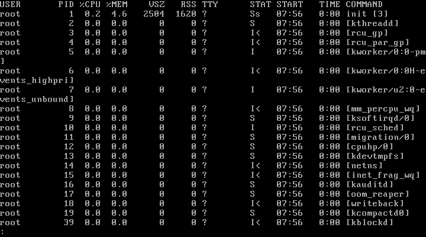
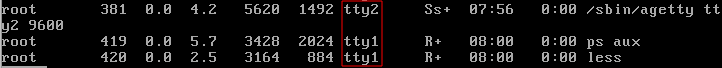
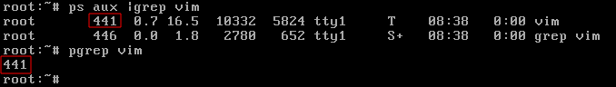
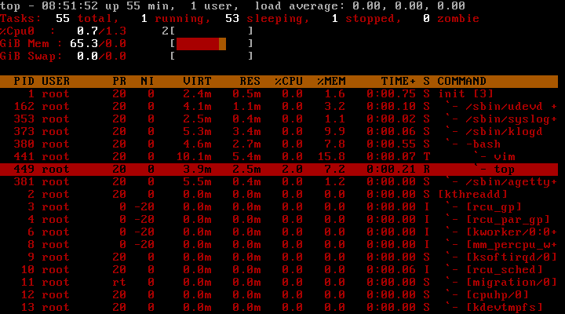

| Администрирование Calmira GNU/Linux | ||
|---|---|---|
| Назад | Домой | Далее |
| Права доступа | Управление пользователями |
Процесс в Linux (как и в UNIX) - это программа, которая выполняется в отдельном виртуальном адресном пространстве. Такая абстракция, с помощью которой можно управлять памятью, временем работы процесора и ресурсами ввода/вывода.
Процессы защищены друг от друга и крах одного процесса не повлияет на работу других и всей системы в целом. Один процесс не может прочитать (или записать) данные другого процесса без его разрешения на это, а санкционированное взаимодействие друг с другом разрешено системой.
Процесс состоит из адресного пространства и набора структур данных внутри ядра. Адресное пространство - набор страниц памяти, выделенных ядром для использования процессу.
Для создания процессов используются два системных вызова: fork() и exec. fork() создаёт новое адресное пространство, которое полностью идентично адресному пространству другого процесса. После выполнения fork() получается два абсолютно одинаковых процесса - основной и порождённый.
Каждый процесс в системе имеет уникальный идентификатор - Process ID. Этот номер используется ядром и специализированными утилитами для работы с процессами.
Пользователь может управлять поведением процессов, запущенных от его имени. Но только root имеет право управления всеми процессами - и его, и других пользователей. Управление процессами производится специально предназначенными для этого утилитами, а так же некоторыми командами оболочки (shell)
Есть несколько типов процессов:
Ядро назначает каждому процессу уникальный идентификатор (PID - Process Identification). На сегодня Linux использует концепцию пространства имён процесса, которая ещё больше ограничивает способность процессов видеть и влиять друг на друга. Недостаток в том, что процесс может иметь разные PID в зависимости от пространства имён наблюдателя.
Для того, чтобы создать новый процесс, существующий должен клонировать сам себя. Клон может заменить выполняемую программу другой.
Исходный процесс называется родительским, клон - дочерним. Каждый дочерний процесс имеет Parent Process ID (PPID).
Существует ещё несколько идентификаторов процессов, которые пригодятся при администрировании Calmira и других дистрибутивов Linux.
UID (User ID) - это идентификатор пользователя, создавшего данный процесс - копия UID родительского процесса. Менять атрибуты могут только его владелец (тот, кто его создал) и суперпользователь.
EUID (Effective User ID) - текущий пользовательский идентификатор процесса, предназначенный для определения, к каким ресурсам и файлам есть право доступа в данный момент. У большинства процессов значения UID и EUID одинаковые, кроме тех, у которых установлен бит смены идентификатора пользователя setuid.
Так же может встречаться довольно редкий и нестандартный параметр FSUID, определяющий возможности работы с ФС, но он используется очень редко.
GID (Group ID) - идентификационный номер группы данного процесса. EGID связан с GID так же, как EUID с UID.
Все процессы, кроме init, создаются с помощью системного вызова fork(). Вызывая эту функцию, процесс создаёт свой дубликат, называемый дочерним процессом (см. предыдущие пункты). Дочерний процесс - копия родительского, но с отличиями:
После вызова fork() может посредством системного вызова wait()/waitpid() приостановить своё выполнение до завершения дочернего процесса, или продолжать свою работу независимо от него. Процесс завершает своё выполнение вызовом функции exit()
Два основных сигнала - SIGTERM и SIGKILL. Первый запрашивает остановку процесса, который работает. Этот сигнал может быть проигнорирован. Процессу даётся некоторое время, чтобы он корректно завершился. Второй (SIGKILL) заставляет процесс прекратить своё выполнение немедленно. Программа не может проигнорировать этот сигнал.
kill <сигнал> PID |
Если сигнал не указан, то булет использоваться тот, что по умолчанию - SIGTERM. Если это не помогает, что можно использовать одну из следующих команд для принудительного завершения процесса:
kill SIGKILL PID # Или kill -9 PID |
Вы можете не знать PID нужного процесса. В таком случае можете использовать системные мониторы top, htop, которые предоставляются в портах, либо использовать "изкоробочные" решения, такие как pidof:
pidof vim |
Команда выше выведет вам PID текстового редактора Vim.
Можно поступить проще. Если вы не знаете PID нужного процесса, то можно не выполнять последовательно pidof и kill - можно объединить их в одну команду:
kill $(pidof vim) |
Программа ps один из основных инструментов системного администратора для контроля процессов. Эта программа будет доступна даже тогда, когда не будет смонтирован раздел /usr (либо его вообще не будет). С помощью этой программы можно получить информацию об имени процесса, его PID, UID, приоритете, используемой памяти и пр.
Для просмотра списка всех процессов используется опция aux. a означает, что требуется вывести все процессы, x - даже те процессы, отсоединённые от управляющего терминала, u - фильтрация по имени или идентификатору пользователя.
На скриншоте ниже показан вывод ps aux |less (команда ps aux объединена в конвейер с утилитой less для возможности прокрутки вывода, если он не умещается на экран).
Табл. 1 - колонки таблицы вывода ps aux
| Колонка | Объяснение |
| USER | Владелец процесса |
| PID | Process ID |
| %CPU | Доля времени ЦП, выделенная процессу (в процентах) |
| %MEM | Сколько реальной памяти занято процессом (в процентах) |
| VSZ | Виртуальный размер процесса |
| RSS | Кол-во страниц памяти (размер резидентного набора) |
| TTY | В каком TTY запущено (идентификатор управляющего терминала) - выделено красным  |
| STAT | Текущий статус процесса:
|
| TIME | Кол-во времени ЦП, затраченное на выполнение процесса |
| COMMAND | Имя аргумента и команды. Программы могут модифицировать эту информацию, поэтому в этой колонке не для всех процессов может быть получена достоверная информация. Команды в скобках (в колонке COMMAND) являются потоками ядра, запланированными в качестве процессов. |
Пользователям и администраторам часто приходится искать нужный процесс среди большого спика процессов из вывода ps. Тогда объедините эту программу с grep в пайп:
ps aux |grep "vim" |
Замените vim на имя нужного вам процесса. Но обратите внимание, что вывод будет включать в себя и программу grep, так как этот процесс был активен во время выполнения ps (мы же объединили эти две программы в пайп). Чтобы этого избежать, используйте grep -v:
ps aux |grep -v grep |grep "vim" |
Так же (для определения PID процесса) можно использовать pgrep:
pgrep vim |

Красным выделены значения PID нужного процесса vim

На скриншоте выше виден вывод утилиты top. По умолчанию, информация из вывода обновляется каждые 10 секунд. На первых строках вывода в сжатом виде представлена информация о нагрузке системы, кол-ве процессов, использовании процессора и пр.
Так же есть более удобная утилита htop, так же предназначенная для работы с процессами. Установите его из портов (console/htop